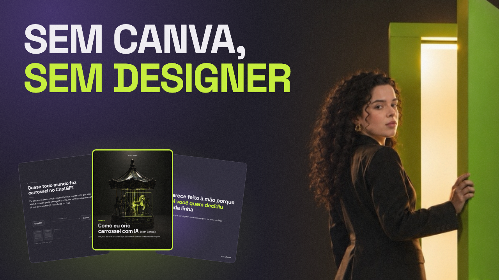
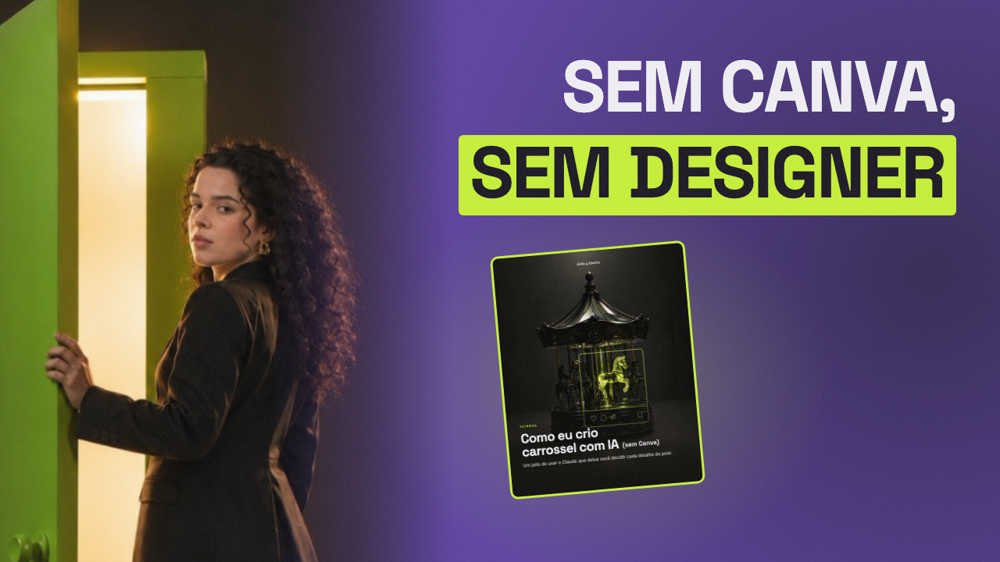
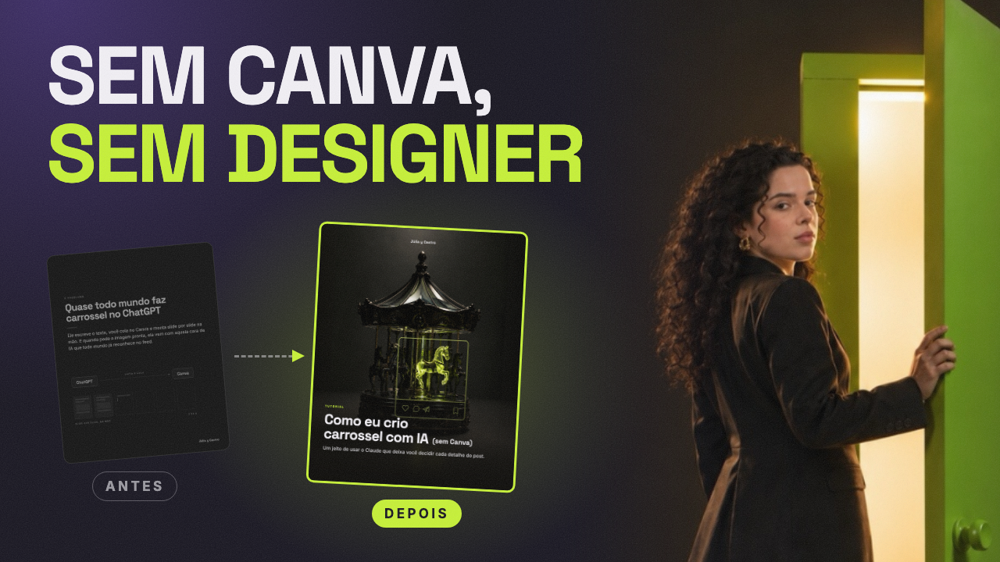

Mesmo conteúdo (vídeo 1) nas três. Rosto provisório, a foto real entra no sábado. À direita, o tamanho aproximado no celular.
Fundo escuro. Texto grande em cima, os slides do carrossel em leque embaixo e o rosto sumindo no escuro à direita. Mostra o resultado e quem fez.

Fundo roxo sólido, rosto à esquerda olhando pro texto, e a frase principal numa faixa verde. A que mais se destaca no meio de thumbnails escuras. Um print só.

O jeito de sempre em cinza, o resultado aceso em verde, a mesma narrativa de cor do post 1. Conta a promessa do vídeo sem ler o título. Pede dois prints por vídeo.
